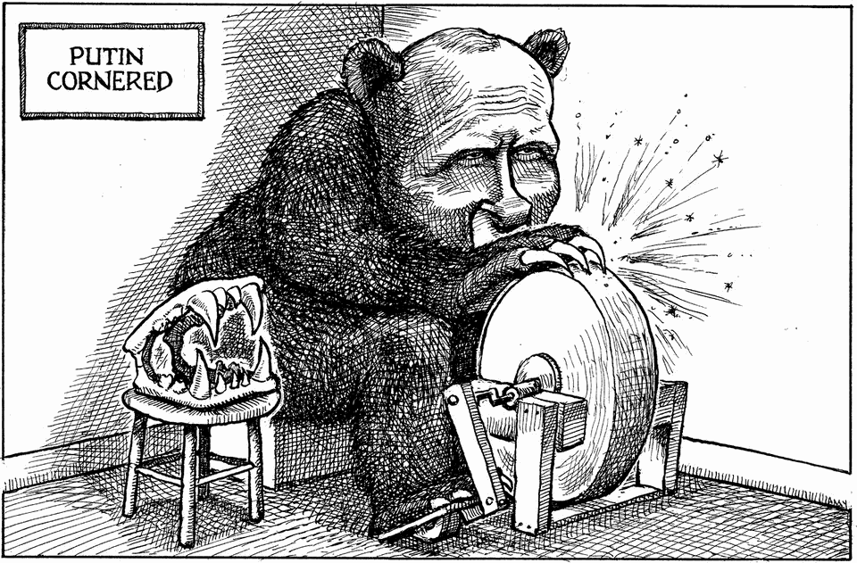

The world this week
Cartoon: Putin cornered
A lighter take on the news

Sep 3rd 2026
Dig deeper into the subjects of this week’s cartoon:
Cornered, Vladimir Putin plans to escalate his war
Ukraine is bracing for Russia’s hardest winter blitz yet
By Invitation: Europe cannot protect Russia from itself, writes Radek Sikorski
You can see previous ones here.